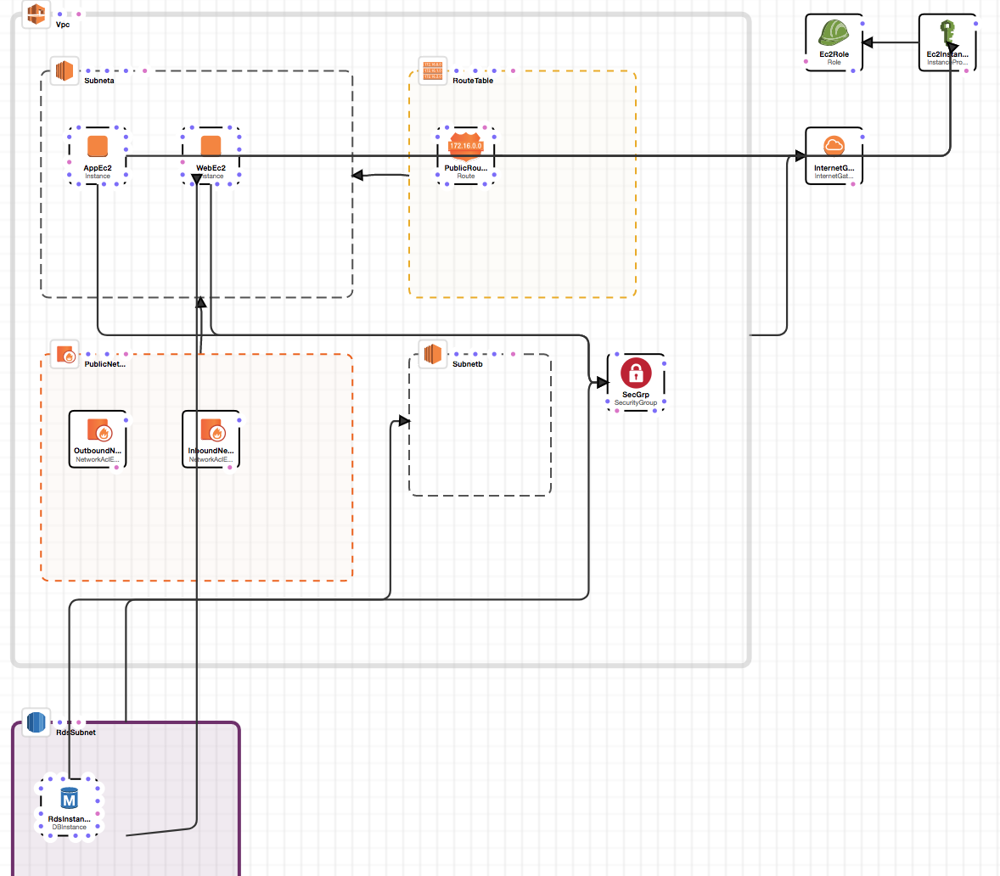

Introduction.
This documentation outlines the steps I took to deploy, and automate the deployment of, the Accelo test project.
The beginning of this documentation outlines the steps I took to understand the project and the environment.
The aim of this documentation is both to outline how to deploy the application, as well test the application against the specification.
Breaking down the project.

My first step was to upload the template to CloudFormation in order to visualise it. This gave me a better understanding of the requirements. My next step was to break down each part of the stack in order to see where we can automate and enhance the security of the stack. This is below.
EC2 Resources.
I needed to break down what resources were being deployed so that I could see how the stack looked. CloudFormation Designer was a good tool to use here.
I also wanted the template in a YAML format, see right.
Template
AWSTemplateFormatVersion: 2010-09-09
Description: Create test project environment
Parameters:
KeyName:
Description: SSH key pair to use
Type: String
Mappings:
Config:
Static:
AMI: ami-a042f4d8
Cidr: 10.0.0.0/16
DbInstanceType: db.t2.micro
DbPassword: Simple+test^Project!
DbUsername: test_project
InstanceType: t2.micro
HostBits: '8'
SubnetCount: '2'
Resources:
Vpc:
Type: 'AWS::EC2::VPC'
Properties:
CidrBlock: !FindInMap
- Config
- Static
- Cidr
InstanceTenancy: default
EnableDnsSupport: 'true'
EnableDnsHostnames: 'true'
Tags:
- Key: Name
Value: Test project
Subneta:
Type: 'AWS::EC2::Subnet'
Properties:
AvailabilityZone: !Join
- ''
- - !Ref 'AWS::Region'
- a
VpcId: !Ref Vpc
CidrBlock: !Select
- '0'
- 'Fn::Cidr':
- !FindInMap
- Config
- Static
- Cidr
- !FindInMap
- Config
- Static
- SubnetCount
- !FindInMap
- Config
- Static
- HostBits
MapPublicIpOnLaunch: 'true'
Tags:
- Key: Name
Value: Test Project Zone A
Subnetb:
Type: 'AWS::EC2::Subnet'
Properties:
AvailabilityZone: !Join
- ''
- - !Ref 'AWS::Region'
- b
VpcId: !Ref Vpc
CidrBlock: !Select
- '1'
- 'Fn::Cidr':
- !FindInMap
- Config
- Static
- Cidr
- !FindInMap
- Config
- Static
- SubnetCount
- !FindInMap
- Config
- Static
- HostBits
MapPublicIpOnLaunch: 'true'
Tags:
- Key: Name
Value: Test Project Zone B
RdsSubnet:
Type: 'AWS::RDS::DBSubnetGroup'
Properties:
DBSubnetGroupDescription: Test Project RDS subnt group
SubnetIds:
- !Ref Subneta
- !Ref Subnetb
InternetGateway:
Type: 'AWS::EC2::InternetGateway'
Properties:
Tags:
- Key: Name
Value: Test Project
VpcGatewayAttachment:
Type: 'AWS::EC2::VPCGatewayAttachment'
Properties:
VpcId: !Ref Vpc
InternetGatewayId: !Ref InternetGateway
RouteTable:
Type: 'AWS::EC2::RouteTable'
Properties:
VpcId: !Ref Vpc
Tags:
- Key: Name
Value: Test Project
PublicRoute:
Type: 'AWS::EC2::Route'
Properties:
RouteTableId: !Ref RouteTable
DestinationCidrBlock: 0.0.0.0/0
GatewayId: !Ref InternetGateway
SubaRouteTableAssociation:
Type: 'AWS::EC2::SubnetRouteTableAssociation'
Properties:
SubnetId: !Ref Subneta
RouteTableId: !Ref RouteTable
PublicNetworkAcl:
Type: 'AWS::EC2::NetworkAcl'
Properties:
VpcId: !Ref Vpc
Tags:
- Key: Name
Value: Test Project
InboundNetworkAclEntry:
Type: 'AWS::EC2::NetworkAclEntry'
Properties:
NetworkAclId: !Ref PublicNetworkAcl
RuleNumber: '100'
Protocol: '-1'
RuleAction: allow
Egress: 'false'
CidrBlock: 0.0.0.0/0
OutboundNetworkAclEntry:
Type: 'AWS::EC2::NetworkAclEntry'
Properties:
NetworkAclId: !Ref PublicNetworkAcl
RuleNumber: '100'
Protocol: '-1'
RuleAction: allow
Egress: 'true'
CidrBlock: 0.0.0.0/0
SubnetaNetworkAclAssociation:
Type: 'AWS::EC2::SubnetNetworkAclAssociation'
Properties:
SubnetId: !Ref Subneta
NetworkAclId: !Ref PublicNetworkAcl
SecGrp:
Type: 'AWS::EC2::SecurityGroup'
Properties:
GroupDescription: Security group for test project hosts
SecurityGroupIngress:
- IpProtocol: tcp
FromPort: '443'
ToPort: '443'
CidrIp: 0.0.0.0/0
- IpProtocol: tcp
FromPort: '80'
ToPort: '80'
CidrIp: 0.0.0.0/0
- IpProtocol: tcp
FromPort: '22'
ToPort: '22'
CidrIp: 0.0.0.0/0
Tags:
- Key: Name
Value: SecGrp
VpcId: !Ref Vpc
Ec2Role:
Type: 'AWS::IAM::Role'
Properties:
AssumeRolePolicyDocument:
Version: 2012-10-17
Statement:
- Effect: Allow
Principal:
Service:
- ec2.amazonaws.com
Action:
- 'sts:AssumeRole'
Path: /
RoleName: test_project
Ec2InstanceProfile:
Type: 'AWS::IAM::InstanceProfile'
Properties:
InstanceProfileName: test_prject_servers
Path: /
Roles:
- !Ref Ec2Role
RdsInstance:
Type: 'AWS::RDS::DBInstance'
Properties:
DBName: testproject
VPCSecurityGroups:
- !Ref SecGrp
DBSubnetGroupName: !Ref RdsSubnet
AllocatedStorage: '5'
DBInstanceClass: !FindInMap
- Config
- Static
- DbInstanceType
Engine: MySQL
MasterUsername: !FindInMap
- Config
- Static
- DbUsername
MasterUserPassword: !FindInMap
- Config
- Static
- DbPassword
WebEc2:
Type: 'AWS::EC2::Instance'
Properties:
ImageId: !FindInMap
- Config
- Static
- AMI
InstanceType: !FindInMap
- Config
- Static
- InstanceType
IamInstanceProfile: !Ref Ec2InstanceProfile
Tags:
- Key: Name
Value: web
KeyName: !Ref KeyName
SecurityGroupIds:
- !Ref SecGrp
SubnetId: !Ref Subneta
AppEc2:
Type: 'AWS::EC2::Instance'
Properties:
ImageId: !FindInMap
- Config
- Static
- AMI
InstanceType: !FindInMap
- Config
- Static
- InstanceType
IamInstanceProfile: !Ref Ec2InstanceProfile
Tags:
- Key: Name
Value: app
KeyName: !Ref KeyName
SecurityGroupIds:
- !Ref SecGrp
SubnetId: !Ref Subneta
Outputs:
WebEc2DNSName:
Description: The Web DNSName.
Value: !Ref WebEc2.DNSName
EC2 App Instance.
There is an EC2 instance for our App branch, which is in the same subnet as the Web instance.
This instance contains our Perl code which connects to the RDS instance.
Here, we can automate:
- Uploading the code to our instance.
- Installing key dependencies (perl, any addons etc.)
Here, we can use the following tools to monitor health:
- Instance level - CloudWatch
- Application level - ...
EC2 Web Instance.
This instance contains two images that need to be served statically. The fastest server to set up and use here would be lighttpd from my experience.
However, we need to forward requests to the app layer. Let's use Nginx for simplicity.
Here, we can automate:
- The installation of Nginx.
- The uploading of the images to our instance. (Latest Git -> Instance)
- Potentially, automating getting the latest images from GitLab and then deploying when there is a push (CD)?
- Potentially, using SSL to serve the images so we are not untrusted by Chrome and/or placing insecure assets on our application?
Here, we can use the following tools to monitor health:
- Instance level - Cloudwatch
EC2 RouteTable.
There is a RouteTable configuration allowing internet access from the public internet to the instance's subnet.
// EC2: RouteTable
// From the cloudformation template.
"PublicRoute": {
"Type": "AWS::EC2::Route",
"Properties": {
"RouteTableId": {
"Ref": "RouteTable"
},
"DestinationCidrBlock": "0.0.0.0/0",
"GatewayId": {
"Ref": "InternetGateway"
}
},
"Metadata": {
"AWS::CloudFormation::Designer": {
"id": "44404501-f95f-41e2-937f-384f636faa39"
}
}
},
Deploying.
Things to keep in mind.
CloudFormation itself.
- Using a restrictive stack policy. Without one, we can inadvertently delete live production resources, probably causing a severe outage.
- Make sure to enable termination protection on the stack to avoid accidents resulting in an outage.
The CloudFormation template.
We aren't using anything from subnetb, so we can get rid of it.
Automation.
A mixture of the following:
- Bash
- SaltStack
- ServerSpec
CloudWatch
Setup process:
# To use the command line to install the CloudWatch agent on an Amazon EC2 instance.
# Make a directory for downloading and unzipping the agent package. For example, tmp/AmazonCloudWatchAgent. Then change into that directory.
# Download the CloudWatch agent. For a Linux server, type the following:
wget https://s3.amazonaws.com/amazoncloudwatch-agent/linux/amd64/latest/AmazonCloudWatchAgent.zip
# After you have downloaded the package, use a GPG signature file to verify the package signature.
wget https://s3.amazonaws.com/amazoncloudwatch-agent/assets/amazon-cloudwatch-agent.gpg
# Unzip the package.
unzip AmazonCloudWatchAgent.zip
# Install the package. On a Linux server, change to the directory containing the package and type:
sudo ./install.sh
https://docs.aws.amazon.com/AmazonCloudWatch/latest/monitoring/install-CloudWatch-Agent-on-first-instance.html Installation Process Overview
The general flow of installing the CloudWatch agent is as follows:
Create the IAM roles and users that you need for the CloudWatch agent. They enable CloudWatch to collect metrics from the server, and to integrate with AWS Systems Manager.
If you are installing on an Amazon EC2 instance, attach an IAM role to the instance. If you are installing on an on-premises server, create an IAM user to enable the CloudWatch agent to write information to CloudWatch.
Download the agent package, using either AWS Systems Manager Run Command or a public Amazon S3 download link.
Modify the CloudWatch agent configuration files, and create a named profile for CloudWatch agent. Creating the named profile is optional when installing the agent on an Amazon EC2 instance.
Start the agent.
AWSCli
Installing AWScli (platform agnostic, Python required).
pip install awscli
The machine performing the creation of the stack must install awscli.
Now to business.
The first thing we need to do is automate the creation of the stack. I personally think that rewriting this CloudFormation template in Ansible/Chef is significant overkill for an application like this, and in the interest of time, the best option is simply to deploy using the AWS Cli library.
Deploying the CloudFormation template to AWS.
aws cloudformation deploy --template-file cloudformation.template --stack-name accelo-prod --parameter-overrides KeyName=accelo-prod --capabilities CAPABILITY_NAMED_IAM
We need to alter the AMI for the Sydney region. We SHOULD use mappings if we had a multi-region deployment.
We can, of course, simply add this to our SaltStack deployment.
Specifying what we need, and where we need it.
So now, in order, we need to describe what we want to deploy, and when.
| Item | Description / Action |
|---|---|
| awscli | Install, or verify the installation of, awscli. |
| Check | Check for existance of the CF template in the directory. |
| CloudFormation Template | Use the awscli to deploy our new CF template. |
| ec2-userdata | Install our ec2-userdata scripts on launch. |
| Verify | Make sure everything we asked for is currently in the environment. |
Altering the CloudFormation Template to add our userdata.
We need to add the following to our template in order to set up our hosts automatically.
We have the following ports exposed on our two EC2 instances:
- '443'
- '80'
- '22'
This means we should be setting up some form of SSL as well. I would recommend forwarding port 80 traffic to 443 (SSL) as well.
IMPORTANT FEEDBACK: The cloudformation template is missing a security rule for 3306 (RDS DB). This caused some time to be lost.
IMPORTANT FEEDBACK: The cloudformation template creates the database testproject when test_project is needed.
The key part of the configuration is to serve the /images directory in this branch and to forward on all other requests to the app layer.
Web Instance
| Item | Description / Action |
|---|---|
| OpenSSL | Install OpenSSL. |
| Nginx | Install Nginx. |
| SSL | Generate self signed certificate and move to Nginx. |
| files (images) | Download from Bitbucket, checkout web branch, extract the images folder. |
| Nginx Config | Configure Nginx to serve /images, otherwise send requests to the App instance. |
App Instance
| Item | Description / Action |
|---|---|
| OpenSSL | Install OpenSSL. |
| Code | Download from Bitbucket, checkout app branch. |
| SSL | Generate self signed certificate and move to Plack directory. |
cpanm --installdeps . |
Install required dependencies |
plackup -p 8080 bin/app.psgi |
Run our server. |
SSL
Our application seems to require SSL access, and it is good practice to be using it (lest your application be forever doomed with an "insecure" on Chrome).
We need to generate and configure an SSL certificate for Nginx/Plack with the following steps:
#!/bin/bash
echo "Generating an SSL private key to sign your certificate..."
openssl genrsa -des3 -out accelo.key 1024
echo "Generating a Certificate Signing Request..."
openssl req -new -key accelo.key -out accelo.csr
echo "Removing passphrase from key..."
cp accelo.key accelo.key.org
openssl rsa -in accelo.key.org -out accelo.key
rm accelo.key.org
echo "Generating certificate..."
openssl x509 -req -days 365 -in accelo.csr -signkey accelo.key -out accelo.crt
echo "Copying certificate (accelo.crt) to /etc/ssl/certs/"
# Create folder if it doesn't already exist.
mkdir -p /etc/ssl/certs
# Copy the certificate.
cp accelo.crt /etc/ssl/certs/
echo "Copying key (accelo.key) to /etc/ssl/private/"
# Create folder if it doesn't already exist.
mkdir -p /etc/ssl/private
# Copy the key.
cp accelo.key /etc/ssl/private/
We need to launch Plack using the following in order to make use of this file.
plackup --enable-ssl --ssl-key-file=/etc/ssl/private/accelo.key --ssl-cert-file=/etc/ssl/certs/accelo.crt -p 443 bin/app.psgi
Side note: We really should not be using Plack exposed to the internet. It is not designed for production use. Simply using Apache with mod_perl, or even using the ProxyPass directive is significantly more secure.
Web instance - UserData.
The instances are both using CentOS, so keep in mind we need to use yum as the package manager. We need to create a userdata template in order to install all of our required packages and configure the server.
Side note: We should have an index.html hiding our images folder so the files are not exposed.
Security note: We should not allow root to be running the services. This would be changed in a production environment.
Our userdata to install our web instance will look something like this:
#!/bin/bash
echo "Updating yum."
yum update -y
echo "Installing Nginx."
yum install -y nginx sudo openssl
echo "Generating an SSL private key to sign your certificate..."
openssl genrsa -des3 -out accelo.key 1024
echo "Generating a Certificate Signing Request..."
openssl req -new -key accelo.key -out accelo.csr
echo "Removing passphrase from key..."
cp accelo.key accelo.key.org
openssl rsa -in accelo.key.org -out accelo.key
rm accelo.key.org
echo "Generating certificate..."
openssl x509 -req -days 365 -in accelo.csr -signkey accelo.key -out accelo.crt
echo "Copying certificate (accelo.crt) to /etc/ssl/certs/"
# Create folder if it doesn't already exist.
mkdir -p /etc/ssl/certs
# Copy the certificate.
cp accelo.crt /etc/ssl/certs/
echo "Copying key (accelo.key) to /etc/ssl/private/"
# Create folder if it doesn't already exist.
mkdir -p /etc/ssl/private
# Copy the key.
cp accelo.key /etc/ssl/private/
# Now set up Nginx.
root="/var/www/accelo"
block="/etc/nginx/sites-available/accelo"
# Create the folder, and parents if required.
sudo mkdir -p $root
# Download our images.
git clone -b web --single-branch https://bitbucket.org/mark_curtis/devops_test_project.git --depth 1 $root
# They should now be in /var/www/accelo/images
# We need to listen on 80 and 443.
# Create the Nginx server block file:
sudo tee $block > /dev/null <<EOF
server {
listen 80;
listen [::]:80;
root /var/www/$domain/html;
server_name accelo-prod;
location /images {
try_files $uri $uri/ =404;
}
location / {
proxy_set_header Host $host;
proxy_set_header X-Real-IP $remote_addr;
proxy_pass $APP_ENDPOINT;
}
}
server {
listen 443 ssl;
ssl on;
root /var/www/$domain/html;
ssl_certificate /etc/ssl/certs/accelo.crt;
ssl_certificate_key /etc/ssl/private/accelo.key;
server_name accelo-prod;
location /images {
try_files $uri $uri/ =404;
}
location / {
proxy_set_header Host $host;
proxy_set_header X-Real-IP $remote_addr;
proxy_pass $APP_ENDPOINT;
}
}
EOF
# Link to make it available
sudo ln -s $block /etc/nginx/sites-enabled/
# Test configuration and reload if successful
sudo nginx -t && sudo nginx -s reload
App instance - UserData.
The instances are both using CentOS, so keep in mind we need to use yum as the package manager. We need to create a userdata template in order to install all of our required packages and configure the server.
Security note: We should not allow root to be running the services. This would be changed in a production environment.
#!/bin/bash
echo "Updating yum."
yum update -y
echo "Installing Nginx."
yum install -y sudo openssl curl
echo "Install Perl."
curl -L http://install.perlbrew.pl | bash
echo "Generating an SSL private key to sign your certificate..."
openssl genrsa -des3 -out accelo.key 1024
echo "Generating a Certificate Signing Request..."
openssl req -new -key accelo.key -out accelo.csr
echo "Removing passphrase from key..."
cp accelo.key accelo.key.org
openssl rsa -in accelo.key.org -out accelo.key
rm accelo.key.org
echo "Generating certificate..."
openssl x509 -req -days 365 -in accelo.csr -signkey accelo.key -out accelo.crt
echo "Copying certificate (accelo.crt) to /etc/ssl/certs/"
# Create folder if it doesn't already exist.
mkdir -p /etc/ssl/certs
# Copy the certificate.
cp accelo.crt /etc/ssl/certs/
echo "Copying key (accelo.key) to /etc/ssl/private/"
# Create folder if it doesn't already exist.
mkdir -p /etc/ssl/private
# Copy the key.
cp accelo.key /etc/ssl/private/
echo "Make dir."
mkdir -p /var/application/
echo "Downloading app."
# Download our app.
git clone -b app --single-branch https://bitbucket.org/mark_curtis/devops_test_project.git --depth 1 /var/application/
# Now set up Plack.
echo "Install cpanminus package manager."
curl -L https://cpanmin.us | perl - --sudo App::cpanminus
echo "Install Plack."
cpanm Plack
echo "Install the rest of the dependencies."
cpanm --installdeps /var/application/cpanfile
echo "Start Plack in background."
plackup --daemonize --enable-ssl --ssl-key-file=/etc/ssl/private/accelo.key --ssl-cert-file=/etc/ssl/certs/accelo.crt -p 443 bin/app.psgi
Client Setup and Deployment of the Stack.
#!/bin/bash
echo "# Hello Accelo."
echo "# This script will create the stack, create a roster file for saltstack, then deploy the stack onto both nodes."
echo "# It will then provide you with a URL to connect to the web instance."
echo "# You can replace the key with yours below."
echo "# Enjoy."
echo " - Alexander Nicholson."
# Create the stack.
aws cloudformation deploy --template-file cloudformation.template --stack-name accelo-prod --parameter-overrides KeyName=accelo-prod --capabilities CAPABILITY_NAMED_IAM
launch1=`aws ec2 describe-instances --query 'Reservations[0].Instances[*].[PublicDnsName,Tags[*]]' | grep -E 'Name|ec2' | sed -e "s/^Name//" | awk '{$1=$1};1' | grep -c app`
launch2=`aws ec2 describe-instances --query 'Reservations[1].Instances[*].[PublicDnsName,Tags[*]]' | grep -E 'Name|ec2' | sed -e "s/^Name//" | awk '{$1=$1};1' | grep -c web`
rds=`aws rds describe-db-instances --query "DBInstances[].Endpoint[].Address"`
# Create our roster.
touch roster-accelo.yaml
aws ec2 describe-instances --query 'Reservations[0].Instances[*].[PublicDnsName,Tags[*]]' | grep -E 'Name' | sed -e "s/^Name//" | awk '{$1=$1};1' >> roster-accelo.yaml
perl -pi -e 'chomp if eof' roster-accelo.yaml
printf : >> roster-accelo.yaml
echo >> roster-accelo.yaml
printf " host: " >> roster-accelo.yaml
aws ec2 describe-instances --query 'Reservations[0].Instances[*].[PublicDnsName,Tags[*]]' | grep -E 'ec2' | sed -e "s/^Name//" | awk '{$1=$1};1' >> roster-accelo.yaml
echo " user: ec2-user" >> roster-accelo.yaml
echo " priv: accelo-prod.pem" >> roster-accelo.yaml
echo " sudo: True" >> roster-accelo.yaml
aws ec2 describe-instances --query 'Reservations[1].Instances[*].[PublicDnsName,Tags[*]]' | grep -E 'Name' | sed -e "s/^Name//" | awk '{$1=$1};1' >> roster-accelo.yaml
perl -pi -e 'chomp if eof' roster-accelo.yaml
printf : >> roster-accelo.yaml
echo >> roster-accelo.yaml
printf " host: " >> roster-accelo.yaml
aws ec2 describe-instances --query 'Reservations[1].Instances[*].[PublicDnsName,Tags[*]]' | grep -E 'ec2' | sed -e "s/^Name//" | awk '{$1=$1};1' >> roster-accelo.yaml
echo " user: ec2-user" >> roster-accelo.yaml
echo " priv: accelo-prod.pem" >> roster-accelo.yaml
echo " sudo: True" >> roster-accelo.yaml
# Alter RDS connection host in app state.
sed -i -e 's/replaceme/'"$rds"'/g' states/app.sls
nginxrev="\"http:\/\/"
# Find the app instance and replace it in Nginx config.
if [[ $launch1 -eq 1 ]]
then
nginxrev+=`aws ec2 describe-instances --query 'Reservations[0].Instances[*].[PublicDnsName,Tags[*]]' | grep -E 'ec2' | sed -e "s/^Name//" | awk '{$1=$1};1'`
else
nginxrev=`aws ec2 describe-instances --query 'Reservations[1].Instances[*].[PublicDnsName,Tags[*]]' | grep -E 'ec2' | sed -e "s/^Name//" | awk '{$1=$1};1'`
fi
nginxrev+="\""
# Alter reverse proxy connection host in web state.
sed -i -e 's/replaceme/'"$nginxrev"'/g' states/files/nginx.conf
# Create virtual environment so we can use saltstack without changing the client machine.
virtualenv venv
source venv/bin/activate
pip install salt-ssh
echo "Initialising roster."
sudo salt-ssh --roster-file=inventory.yaml
sudo salt-ssh -i '*' --raw 'sudo yum install -y python'
echo "Testing connectivity."
sudo salt-ssh -i '*' test.ping
echo "[+] Starting run for our web instance."
sudo salt-ssh -i 'web' state.apply web
echo "[+] Starting run for our app instance."
sudo salt-ssh -i 'app' state.apply app
echo "Saltstack completed."
# Completed.
echo You can access the stack web instance via the following link:
if [[ $launch2 -eq 1 ]]
then
aws ec2 describe-instances --query 'Reservations[1].Instances[*].[PublicDnsName,Tags[*]]' | grep -E 'ec2' | sed -e "s/^Name//" | awk '{$1=$1};1'
else
aws ec2 describe-instances --query 'Reservations[0].Instances[*].[PublicDnsName,Tags[*]]' | grep -E 'ec2' | sed -e "s/^Name//" | awk '{$1=$1};1'
fi
return 0
Side note: In the future, I would split the web and app sls files into seperate parts to make it more verbose.
Side note: We should be using a master node and deploying from there.
As I am letting Saltstack handle the git repo, it will always have the latest version. It will also get the correct branch for me and place it where it needs to be.
The way this works requires you to have no other ec2
Please replace "accelo-prod.pem" with the key that you have uploaded, as per the beginning of this document so that this will work.
Keep in mind, this will take quite a while to do it's thing. Around 15 minutes for the app server deployment, and 10 minutes for the web server deployment. Get a coffee while you wait.
Please take care of the previous notes regarding the template alterations. I am using sed above to replace the values so that we can connect the dots. There's lots to improve on in future.
You can kill plack with sudo salt-ssh -i "app" --raw "sudo pkill -f plackup"
You can start plack again with sudo salt-ssh --verbose -i "app" state.apply web_download
Some other notes:
- Optimise script to make less calls.
- Enable SSL on App side.
- Add more failsafes.
- The database instance should definitely have a name in future.